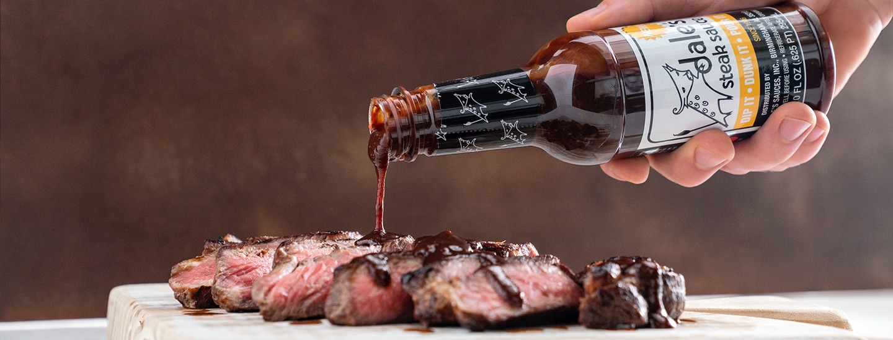

Dale's Marinated Grilled Steak

This is a very simple recipe, from myself, to cook a good steak on a charcoal grill with Dale's seasoning.
Ingredients:
- Steak of choice, NY strip reccomended
- Bottle of Dale's seasoning
Instructions:
- Lay steaks beside eachother in container or dish of choice. Fill container with Dale's until steaks are covered. Cover container. Put in
refridgerator and let sit for at least 1 hour.
- Light coals in grill. Wait until coals are greyed over and burning hot, then spread coals. Heat grill to 350F.
- Put steaks on grill and cook for 8 minutes on each side. Keep grill at 350F.
- Serve and enjoy.